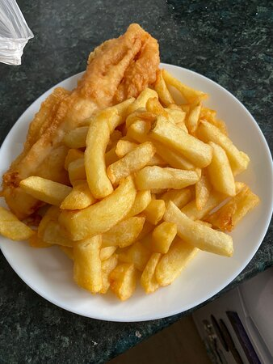

Crispy Beer Batter Fish & Chips

Description
Serve this beer-battered fish over a bed of salt and vinegar chips with tartar sauce and lemon. Virtually every beer-battered fish recipe looks crispy coming out of the fryer, and some even stay crispy for a few minutes, but then the inevitable sogginess sets in. With this simple formula and a few easy tricks, your last bite will be as crisp as your first. The keys are keeping the batter really cold and patting the fish completely dry.
Ingredients
Batter:
- 1 cup self-raising flour
- 2 tablespoons rice flour
- 1/4 teaspoon baking powder
- 1 cup lager-style beer, or more as needed
Fish:
- 4 (6 ounce) cod fillets, fully thawed if frozen
- 2 tablespoons rice flour, or as needed
- salt to taste
- 1 quart vegetable oil for frying
Steps
- Start with the batter: Whisk self-rising flour, and baking powder together in a bowl. Freeze until ready to use.
- Make the fish: Pat cod as dry as possible, then cut lengthwise into eight 1-inch-thick strips. Place rice flour on a plate and season with salt. Dust cod lightly with the rice flour mixture and shake off any excess. Cover a plate with crinkled foil to make a quick drying rack; place cod on top.
- Heat oil in a deep-fryer to 375 degrees F (190 degrees C).
- Finish the batter: Remove flour mixture from the freezer. Pour in beer and whisk until batter is the consistency of a thick pancake batter, adding more beer as needed.
- Dip floured cod into the batter to coat; lift out and let excess drip off.
- Fry cod in batches until golden brown, dunking occasionally if needed, 3 to 4 minutes. Drain on paper towels. Serve immediately.